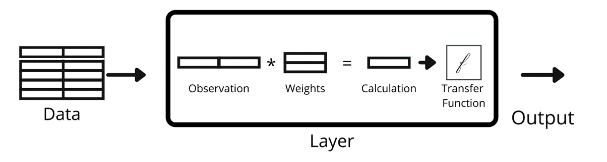

Neural networks are powerful computational tools that can generate exceptional performance in predicting non-linear relationships. Within the context of policymaking, neural networks can be developed that calculate relationships between policies and the desired outcome. Many types of neural networks exist, but this page applies a specific type called a multilayer perceptron (MLP) to United States Energy Efficiency and Renewable Energy (EERE) policy at the state level. By applying an MLP to the EERE policy, the network learns the relationship between these policies and a particular state’s electricity generation. This MLP model trains itself using existing data from the North Carolina Clean Energy Technology Center’s Database of State Incentives for Renewables & Efficiency (DSIRE) using the U.S. Energy Information Administration (EIA)’s Open Data Application Programming Interface (API) to predict how differing energy efficiency and renewable energy policies affect real time energy generation.
DSIRE includes a collection of nearly 6,000 state-level EERE policies. The annual net generation data comes from over 13,000 observations collected by EIA.
The map below compares the number of EERE policies in each state and the proportion of renewable energy generation in each state.
Darker colors indicate more policies
Darker colors indicate more generation
MLPs are a class of machine learning algorithms that can solve classification problems of arbitrary complexity (Hagan et. al, 2014). The popularized MLP algorithm generates weights in a matrix that apply to each input, called features, through a combination of matrix multiplication steps. One way to think of a feature in tabular data is as a column, i.e., a column containing the year of each observation. Each of these multiplication steps send the calculation to a transfer function that coerces the data into a uniform output (Hagan et. al, 2014). This entire process occurs within an MLP layer and each calculation is commonly called a neuron. An MLP can have an arbitrary number of these neurons within each layer and an arbitrary number of layers. The graphic below summarizes the MLP process.
